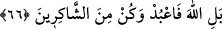
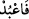

şirk koşarsan, îmanlı iken yaptıkların boşa gider. Din devletine sâhip olduktan sonra
şirke düşersen, her zaman ziyâna uğrayanlardan olursun.”
İbn Atâ da şöyle diyor: “Peygamberlere yasaklanan şirk Allah’tan başkasını dikkate
alma ve onlara iltifat etme şirkidir.”
Amellerin boşa çıkarılmasının kâfir olarak ölme şartına bağlanmaması,
peygamberlere özgü bir durum olması da muhtemeldir. Çünkü şirkin, onlardan sâdır
olması, çok daha çirkin ve şiddetlidir. Şu âyette açıkça beyân edildiği üzere ölüm
şartına bağlı da olabilir: “Her kim dininden döner ve kâfir olarak ölürse,
böylelerinin amelleri boşa gider!” (el-Bakara, 2/217) Bu durumda mutlak mukayyede
hamledilmiş olur. Şâfiî’ye göre ise inkârın kendisi amelleri boşa çıkarmaz. Amelleri
yok eden, kâfir olarak ölmektir. Diğer âlimlere göre ise amellerin boşa gitmesine yol
açan küfrün kendisidir. Kişi kâfir olarak ölsün veya ölmesin fark etmez.
el-Müfredât’ta der ki: Amellerin boşa gitmesi birkaç türlüdür:
1- Ameller dünyalıktır ve bunların âhirette hiçbir faydası olmaz. Nitekim “Onların
yaptığı her bir ameli ele alıp toz duman ederiz (değersiz kılarız)” (el-Furkân, 25/24)
âyeti buna işâret eder.
2- Ameller âhiretlik olmakla birlikte sâhibi onları Allah rızâsını gözeterek
yapmamıştır. Nitekim bir rivâyete göre “Kıyamet günü bir adam getirilir ve “Dünyada
ne ile meşgul idin?” diye sorulur. O da: “Kur’an okumakla” diye cevap verir. Ona
“Sen ‘falanca kâridir/Kur’an okuyucusudur’ desinler diye okurdun. Sana böyle de
dediler” denir ve o kimsenin cehenneme atılması emredilir.”[140]
3- Kişinin sâlih amelleri vardır, ancak bunlara karşılık daha fazla kötü amelleri vardır
ki onları işlerken ölmüştür. İşte terazinin hafif gelmesi (örnek olarak bk. el-A’râf, 7/9)
ile işâret edilenler bunlardır..”
‘Hüsran’ın ‘amellerin boşa gitmesi’ne bağlanması, sonucun sebebe atfedilmesi
kabîlindendir.
et-Te’vîlâtü’n-Necmiyye’de der ki: “İşâret etmektedir ki peygamber bile olsa insan
nefsi ile başbaşa bırakıldığı zaman, şirk ve riyâ anahtarlarıyla kendisine Allah’ın kahır
hazinelerinin kapılarını açar. Allah’tan başkasına muhabbet nazarıyla baktığı ve eşsiz
olma konusunda O’nun dışındaki varlıkları da var kabul ettiği için amelleri boşa gider.”
66. Hayır! Yalnız Allah’a kulluk et ve şükredenlerden ol.
“Hayır! Yalnız Allah’a kulluk et” ifâdesi, müşriklerin emrini reddetmektedir.
Mef’ûlün (Allah) öne alınması hasr ifâde etmemiş olsaydı, böyle bir anlam
çıkarılamazdı. “
”un “fâ”sı, mahzûf bir şartın cevabıdır. Takdiri şöyledir: Kâfirlerin
ibâdet etmeni emrettiği şeylere değil, ibâdet edeceksen Allah’a ibâdet et!